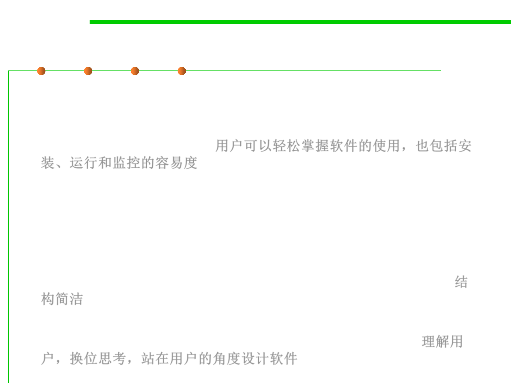

External 8: Ease of use
1.2 Quality Objectives of Software Construction
▪ Ease of use is the ease with which people of various backgrounds
and qualifications can learn to use software products and apply
them to solve problems. It also covers the ease of installation,
operation and monitoring. 用户可以轻松掌握软件的使用，也包括安
装、运行和监控的容易度
▪ How to provide detailed guidance and explanations to novice(初学者
) users, without bothering expert users who just want to get right
down to business.
▪ One of the keys to ease of use is structural simplicity. A well-
designed system, built according to a clear, well thought-out
structure, will tend to be easier to learn and use than a messy one.结
构简洁
▪ Know the user. The argument is that a good designer must make an
effort to understand the system’s intended user community. 理解用
户，换位思考，站在用户的角度设计软件 Chapter 10 (GUI)